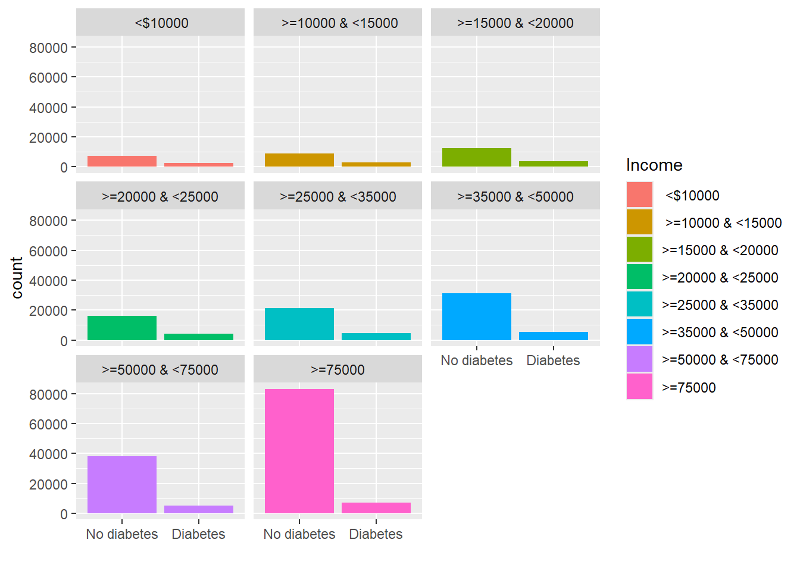
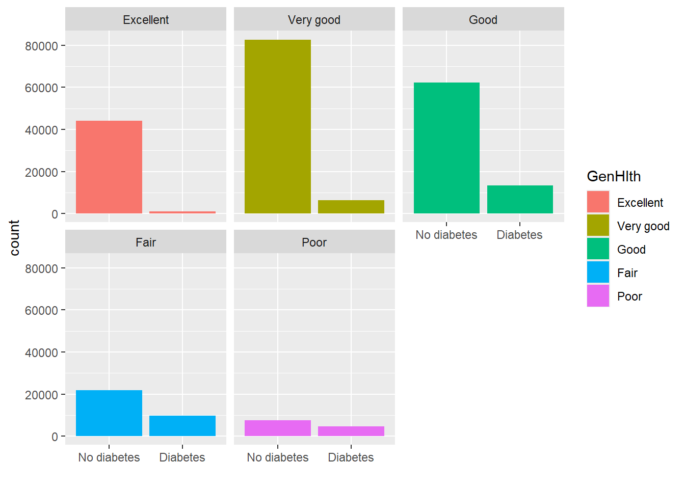

── Attaching core tidyverse packages ──────────────────────── tidyverse 2.0.0 ──
✔ dplyr 1.1.4 ✔ readr 2.1.5
✔ forcats 1.0.0 ✔ stringr 1.5.2
✔ ggplot2 4.0.0 ✔ tibble 3.3.0
✔ lubridate 1.9.4 ✔ tidyr 1.3.1
✔ purrr 1.1.0
── Conflicts ────────────────────────────────────────── tidyverse_conflicts() ──
✖ dplyr::filter() masks stats::filter()
✖ dplyr::lag() masks stats::lag()
ℹ Use the conflicted package (<http://conflicted.r-lib.org/>) to force all conflicts to become errors
library (readr)
Introduction
The data that we are analyzing is a diabetes data from Diabetes Health Indicators Dataset , specifically the diabetes_binary_health_indicators_BRFSS2015.csv which contains binary diabetes indicators. It provides data on whether a person has diabetes or not with other health/lifestyle related variables. It has 22 columns with 3 numeric and other categorical variables.
Using the data we are analyzing what factors affect diabetes. We will look at some key variables and analyze their relationship with diabetes occurrence. Diabetes_binary variable gives us the diabetes or not. We will analyze the following variables against the Diabetes_binary variable: - BMI: This variable provides the body mass index - Age: This variable provides the age group - Income: This variable provides the income range - GenHlth: This variable provides the general health category - PhysActivity: This variable provides whether there was physical activity in the past 30 days - HighChol: This variable provides the cholesterol level
Rows: 253680 Columns: 22
── Column specification ────────────────────────────────────────────────────────
Delimiter: ","
dbl (22): Diabetes_binary, HighBP, HighChol, CholCheck, BMI, Smoker, Stroke,...
ℹ Use `spec()` to retrieve the full column specification for this data.
ℹ Specify the column types or set `show_col_types = FALSE` to quiet this message.
# A tibble: 253,680 × 22
Diabetes_binary HighBP HighChol CholCheck BMI Smoker Stroke
<fct> <fct> <fct> <fct> <dbl> <fct> <fct>
1 No diabetes High BP High colesterol Yes check … 40 Yes No
2 No diabetes No High BP No high colesterol No check i… 25 Yes No
3 No diabetes High BP High colesterol Yes check … 28 No No
4 No diabetes High BP No high colesterol Yes check … 27 No No
5 No diabetes High BP High colesterol Yes check … 24 No No
6 No diabetes High BP High colesterol Yes check … 25 Yes No
7 No diabetes High BP No high colesterol Yes check … 30 Yes No
8 No diabetes High BP High colesterol Yes check … 25 Yes No
9 Diabetes High BP High colesterol Yes check … 30 Yes No
10 No diabetes No High BP No high colesterol Yes check … 24 No No
# ℹ 253,670 more rows
# ℹ 15 more variables: HeartDiseaseorAttack <fct>, PhysActivity <fct>,
# Fruits <fct>, Veggies <fct>, HvyAlcoholConsump <fct>, AnyHealthcare <fct>,
# NoDocbcCost <fct>, GenHlth <fct>, MentHlth <dbl>, PhysHlth <dbl>,
# DiffWalk <fct>, Sex <fct>, Age <fct>, Education <fct>, Income <fct>
BMI MentHlth PhysHlth
Min. :12.00 Min. : 0.000 Min. : 0.000
1st Qu.:24.00 1st Qu.: 0.000 1st Qu.: 0.000
Median :27.00 Median : 0.000 Median : 0.000
Mean :28.38 Mean : 3.185 Mean : 4.242
3rd Qu.:31.00 3rd Qu.: 2.000 3rd Qu.: 3.000
Max. :98.00 Max. :30.000 Max. :30.000
Looking at numeric data summaries, the BMI seems about right.The mental health and physical health (illness) days shows less number of overall illness.
From the above BMI box plot above, diabetes occurrence is sightly higher on average for higher BMI than those with no diabetes
ggplot(data=diabetes_bin,aes(x=Diabetes_binary, fill = Income )) +geom_bar() +facet_wrap(diabetes_bin$Income) +labs(x ="")

From the above plot, income doesn’t seem to have much correlation with having diabetes or not.
ggplot(data=diabetes_bin,aes(x=Diabetes_binary, fill = GenHlth )) +geom_bar() +facet_wrap(diabetes_bin$GenHlth) +labs(x ="")

Comparing general health and diabetes, we can say when the General health is good, there is less chances of having diabetes, however we cannot say anything about when the General health is poor and fair. Because no diabetes and diabetes both looks equal in fair and poor general health.